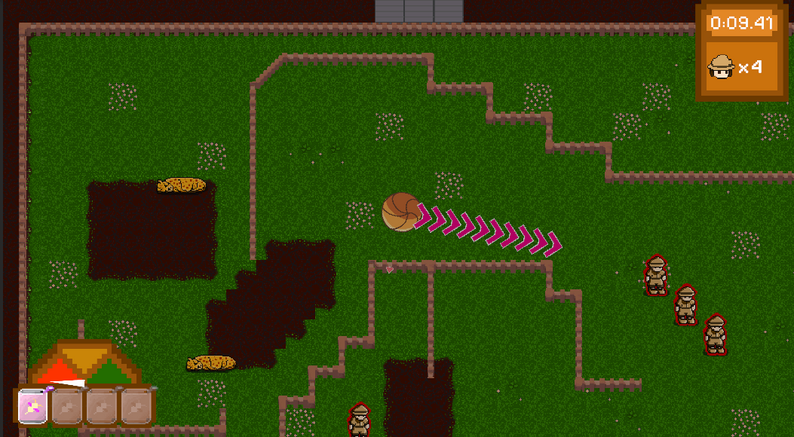
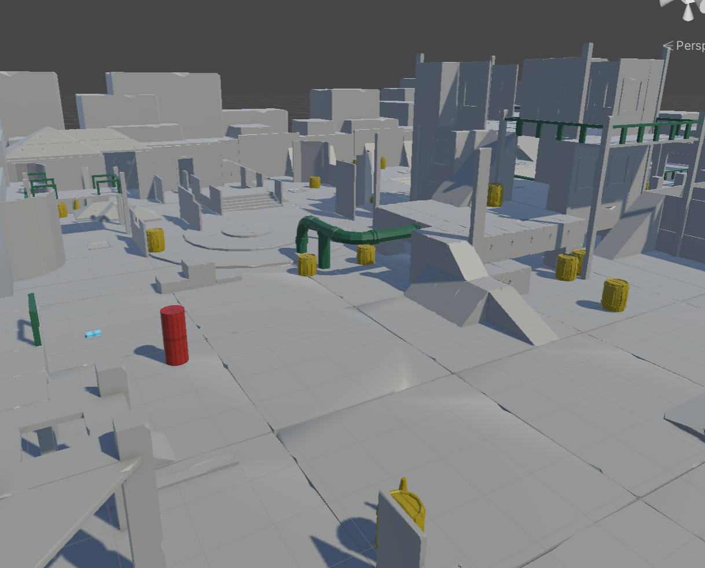

Quantum Decisions is a review I wrote of a research paper discussing the intersection between cognitive science and emerging quantum technology, published in the IPC Spring 2025 Journal.

Scute-Shoot is a 2D Unity
game that I worked on as a part of the 2025 Cornell DGA Summer Project.
I contributed player programming, UI programming, and UI art.
Quantum Decisions is a
review I wrote of a research paper discussing the intersection between cognitive science and emerging quantum
technology, published in the IPC Spring 2025 Journal.

This is a game that I made with Joanne Chen for the 2025 Big Red Hacks Hackathon. I contributed UI programming,
audio curation, audio integration, and gameplay programming. If you'd like to see a more in-depth presentation of the game,
check out
these slides!

Here is some code from a VR Unity game that I am currently working on as a part of the CUXR Project Team.
Object Interaction
Enemy Vision (First Draft)
Enemy Hearing